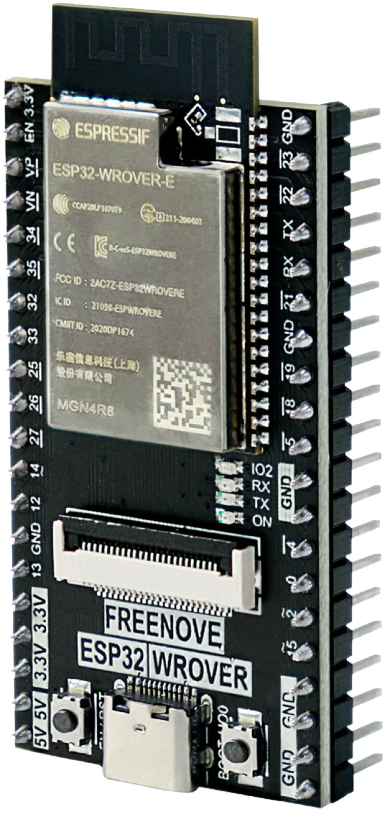
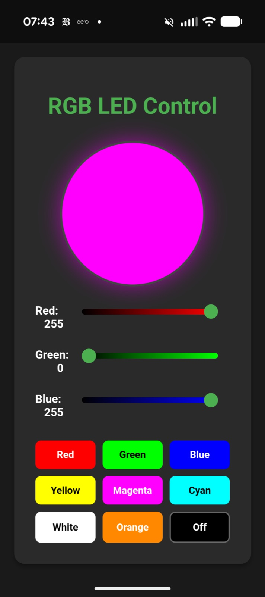
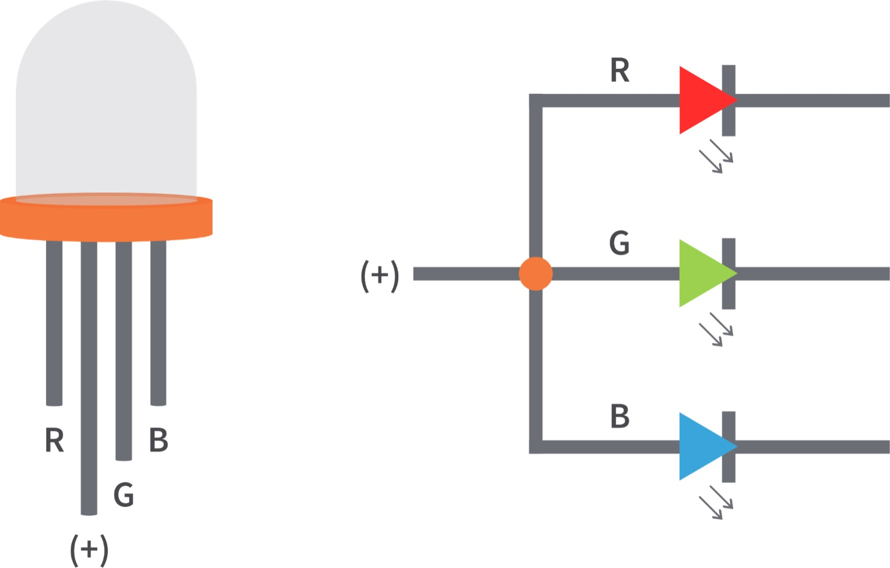
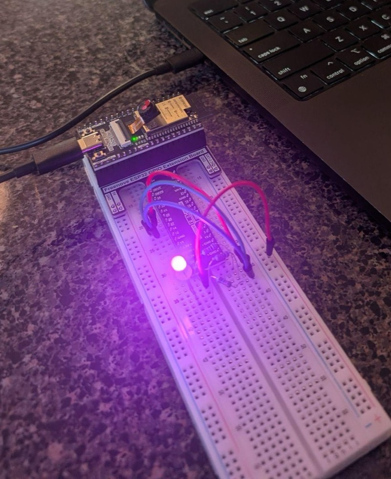
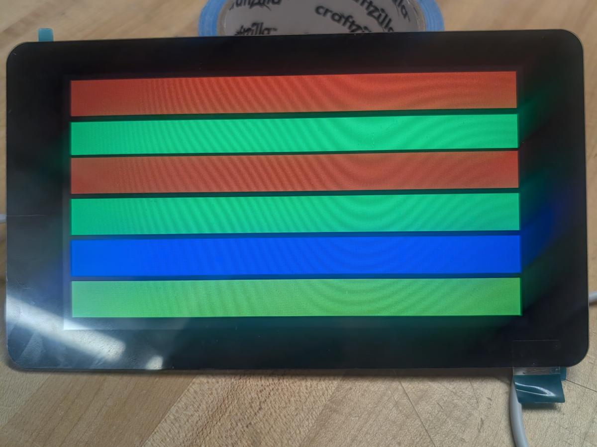

Recap
Before we go wireless. The three things you should have from last class.
Electronics kit
You've received your electronics kit. The parts you'll wire up in class today.
opencode + MicroPython
opencode is set up on your laptop and MicroPython is deployed to your ESP32. It runs your code on the board for you.
AI-assisted electronics
You can already build basic electronics projects with the help of AI. That's the skill we build on today.
What you'll learn today
Connect, then build. The two things we do in class today.
Connect to your microcontroller
Reach your device from a phone and from a web browser. No native app needed.
Light it up, then drive
An in-class exercise, then the robot: a page your phone opens controls both.
Connectivity options
Direct through the board's own hotspot, or shared over a network you both join.
Direct · the board's hotspot
The ESP32 creates its own WiFi network. Your phone joins it and opens the page at the board's own address — no router, no setup. While connected, your phone is off the internet.
Shared · through the internet
The board joins a network you and your phone already share. It gets an address on it, any device there can open the page — and the board can reach online services too.
Client and server
Two pieces make the system work: the board that serves the page, and the browser you control it from — connected directly, over the board's own WiFi.


Change a color from your phone
An in-class exercise before the robot: one RGB LED, served as a page your phone opens.


The prompt
The board & language
ESP32 WROVER, MicroPython.
The component
RGB LED (common anode) and a 220 Ω resistor.
The goal
Change the LED's color from your phone's browser.
The connection
The board's own WiFi hotspot — your phone joins directly.
How it works
Every tap on your phone becomes a request the ESP32 answers.
A web server starts
Your ESP32 runs a web server that renders a web page. No separate computer needed.
The page gets an address
The board serves the page from the network it creates — the address the code prints, like http://192.168.4.1.
Your phone renders it
Your phone's browser renders the HTML that the ESP32's web server generates.
Requests round-trip
Interacting with the page sends a request to the ESP32 (its address is http://192.168.4.1). It reads the request, sets the pins, and answers with the next state.
Other things to try
Once your device is online, the browser becomes a remote control for anything you build.
Visualize sensor data
A dashboard with temperature history charts.
Control devices from your phone
A virtual joystick to control motors, or a virtual switch to turn something on or off.
Manage settings on the phone
Save them to the device: set a thermostat temperature, or set an alarm clock.
Device state visualization
See the status of an LED (on/off) or the current servo angle.
Student build: browser controls
A photo from a class session. The kind of control page you can build for your own device.

Before you go
Close out the connectivity milestone, then bring what you learned to the Robo Challenge.
Digital Making reflection
Complete your reflection for this phase of the course by Thu, Oct 22 at go.tufts.edu/reflect.
Electronics project
Present a working circuit. Your AI conversation, a video demo, and a written reflection on the process.
What's due today
👤 Electronics project
Purpose. Partner with opencode to design, wire, and build a working electronics project on your ESP32 kit. You bring the ideas; opencode writes the code, draws the wiring, and runs it on the board.
👤 Physical making reflection
Purpose. Reflection is how making turns into learning: you stop, look at what you actually did with your hands, and find out what it taught you.
What's due next week
👤 Digital Making reflection
Purpose. Reflection is how making turns into learning: you stop, look at what you actually wired, asked for, and got running, and find out what it taught you.